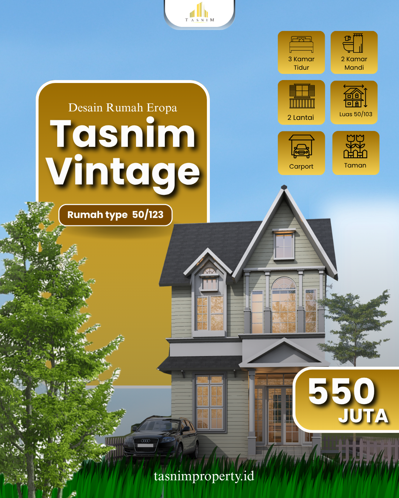

Detail Properti: Tasnim Vintage

Tasnim Vintage Type 50/123
Leuwiliang, Bogor
Rp5500.000.000
- 3 Kamar Tidur
- 2 Kamar Mandi
- Luas Tanah 103 m²
- Luas Bangunan 50 m²
Tasnim Vintage menghadirkan konsep hunian Islami bernuansa modern klasik dengan lingkungan yang tenang dan asri. Terletak di kawasan strategis dan bebas riba, proyek ini cocok bagi Anda yang mencari kenyamanan dan keberkahan dalam satu tempat.
Hubungi via WhatsApp← Kembali ke Beranda